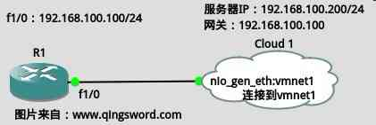

[CCNA图文笔记]-12-配置文件备份与还原
引言
本篇文章通过具体实例演示一下如何将Cisco设备的运行配置文件(running-config)保存到启动配置文件（startup-config），如何将启动配置文件或运行配置文件直接备份到同网段下的一台开启了TFTP服务的计算机上。
文章目录
0×1.实验拓扑图
实验拓扑图如下：Cloud1被桥接到VMware的虚拟网卡vmnet1上，稍后会介绍如何桥接，vmnet1的网段是192.168.100.0/24，这在本系列第6篇搭建实验环境的文章中已经配置过，这里不再赘述；在VMware中安装了一台Ubuntu系统的虚拟机，用来模拟服务器，服务器上安装了TFTP服务（第二节会介绍具体安装步骤），路由器的fa 1/0接口接在vmnet1上，各设备IP如下图所示：
Cloud1桥接到vmnet1的方法如下：
对工作区中的"Cloud1"右击，选择菜单中的"Configure"，按照下图设置，添加vmnet1接口；

如果将vmnet1网卡想象成一台独立的"交换机"，所有VMware中的虚拟机只要使用"Host-Only"网卡模式，就等于是连接到了这台交换机上，而GNS3中的"Cloud"只要桥接到vmnet1，就相当于在vmnet1这台"交换机"上添加了一个接口，所有GNS3中的设备只要连接到"Cloud"这个接口，就等价与连接到了vmnet1这台"交换机"上，就能够与同样连接在vmnet1这台"交换机"上的其他VMware虚拟机通信，只要他们的IP都被配置在同一个网段中。
如果不习惯使用Ubuntu的朋友，可以安装Windows，然后去下载个TFTP软件，将系统的IP与默认网关设置成上面拓扑中的那样，将虚拟机网卡设置成"Host-Only"，确保能与R1通信即可，思路是相同的，操作上请自行变通。
0×2.如何在Ubuntu上安装TFTP服务
首先将VMware中Ubuntu虚拟机接入真实网络，确保能从网络上下载TFTP（如果是物理机连接在路由器上的上网方式就将虚拟机网卡设置成"Bridged"，如果是物理机直接ppp拨号方式就将虚拟机网卡模式设置成"NAT"）打开终端安装tftp服务端：
#1.安装tftpd-hpa服务端 qing@qingsword.com:~$ sudo apt-get install tftpd-hpa #下面是配套的客户端，如果不需要可以不安装，客户端只是提供了连接到tftp服务器的功能 qing@qingsword.com:~$ sudo apt-get install tftp-hpa #2.创建TFTP上传下载目录并添加权限，本例直接创建在当前用户家目录了，请根据实际环境修改 qing@qingsword.com:~$ mkdir tftpdir qing@qingsword.com:~$ sudo chmod 777 tftpdir #3.修改tftp配置文件，将tftp主目录改成上面创建的目录路径 qing@qingsword.com:~$ sudo vim /etc/default/tftpd-hpa #上面两行保持默认，修改后面两行 TFTP_USERNAME="tftp" TFTP_ADDRESS="[::]:69" TFTP_DIRECTORY="/home/qing/tftpdir" #tftp主目录 TFTP_OPTIONS="-l -c -s" #允许上传和下载参数，不配置将无法远程上传和下载 #4.重新启动TFTP服务 qing@qingsword.com:~$ sudo service tftpd-hpa restart
安装完成后，将这台虚拟机的网卡模式设置成"Host-Only"，进入下面的备份还原实例。
0×3.Cisco设备配置文件备份与还原实例
R1配置如下：
R1>en R1#conf t R1(config)#no ip domain-lookup R1(config)#line co 0 R1(config-line)#logg syn R1(config-line)#exec-t 0 0 R1(config-line)#exit R1(config)#int fa 1/0 R1(config-if)#ip add 192.168.100.100 255.255.255.0 R1(config-if)#no shut R1(config-if)#end
将运行配置文件保存到启动配置文件中：
/*查看启动配置文件，在没有将运行配置文件保存到启动配置文件前，启动配置文件什么都没有*/ R1#show startup-config /*将运行配置文件写入启动配置文件中*/ R1#write Building configuration... [OK] /*再次查看启动配置文件就能看到里面和当前运行配置文件内容一致*/ R1#show startup-config /*方法二，下面的命令和上面的write执行效果相同*/ R1#copy running-config startup-config Destination filename [startup-config]? /*指定文件名，本例使用默认*/ Building configuration... [OK]
将配置文件备份到TFTP服务器上：
/*将启动配置文件保存到tftp*/ R1#copy startup-config tftp /*输入运行了TFTP服务器IP*/ Address or name of remote host []? 192.168.100.200 /*保存的文件名，输入一个名称或使用默认名称回车*/ Destination filename [r1-confg]? .!! /*出现感叹号表示传输成功，出现句号表示超时，请检查路由器是否可以和TFTP服务器正常通信*/ /*备份运行配置文件，同上*/ R1#copy running-config tftp
此时可以在服务器上进入TFTP对应的目录，查看到备份文件。
将TFTP服务器上备份的配置文件恢复到路由：
/*首先删除startup-config，模拟其丢失的情况*/ R1#erase startup-config Erasing the nvram filesystem will remove all configuration files! Continue? [confirm] [OK] Erase of nvram: complete /*显示startup-config，被告知不存在*/ R1#show startup-config startup-config is not present /*从备份文件恢复startup-config*/ R1#copy tftp startup-config /*tftp服务器IP*/ Address or name of remote host []? 192.168.100.200 /*输入备份的文件名称*/ Source filename []? r1-confg /*恢复到启动配置文件，默认回车即可*/ Destination filename [startup-config]? Accessing tftp://192.168.100.200/r1-confg... Loading r1-confg from 192.168.100.200 (via FastEthernet1/0): ! [OK - 552 bytes] /*恢复成功，查看一下*/ R1#show startup-config Using 552 out of 129016 bytes ! version 12.4 /* * 同样的方法可以恢复到running-config * # copy tftp running-config */